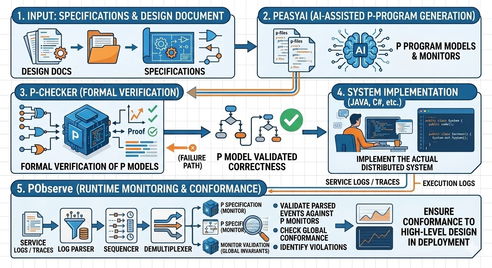

Home
Formal Modeling and Analysis of Distributed Systems


P is a state machine based programming language for formally modeling and specifying complex distributed systems. P allows programmers to model their system design as a collection of communicating state machines and provides automated reasoning backends to check that the system satisfies the desired correctness specifications.

What's New
-
PeasyAI — AI-Assisted P Development
Generate P state machines, specifications, and test drivers from design documents using AI. Integrates with Cursor and Claude Code via MCP with 27 tools, ensemble generation, auto-fix pipeline, and 1,200+ RAG examples.
-
PObserve — Runtime Monitoring
Validate that your production system conforms to its formal P specifications by checking service logs against P monitors — bridging the gap between design-time verification and runtime behavior, without additional instrumentation.
The P Framework
-
P Language
Model distributed systems as communicating state machines. Specify safety and liveness properties. A programming language — not a mathematical notation.
-
PeasyAI
AI-powered code generation from design documents. Generates types, machines, specs, and tests with auto-fix and human-in-the-loop support.
-
P-Checker
Systematically explore interleavings of messages and failures to find deep bugs. Reproducible error traces for debugging. Additional backends: PEx, PVerifier.
-
PObserve
Validate service logs against P specifications in testing and production. Ensure implementation conforms to the verified design.
Learn more about the P framework
Impact at AWS
Using P, developers model their system designs as communicating state machines — a mental model familiar to developers who build systems based on microservices and service-oriented architectures. Teams across AWS that build some of its flagship products — from storage (Amazon S3, EBS), to databases (Amazon DynamoDB, MemoryDB, Aurora), to compute (EC2, IoT) — have been using P to reason about the correctness of their system designs.
Further Reading
Systems Correctness Practices at Amazon Web Services — Marc Brooker and Ankush Desai, Communications of the ACM, 2025.
Why formal methods? How is AWS using P?
The following re:Invent 2023 talk provides an overview of P and its impact inside AWS:

(Re:Invent 2023) Gain confidence in system correctness & resilience with Formal Methods
Experience and Lessons Learned
-
P as a Thinking Tool
Writing formal specifications forces developers to think about their system design rigorously, bridging gaps in understanding. A large fraction of bugs can be eliminated in the process of writing specifications itself!
-
P as a Bug Finder
Model checking finds corner-case bugs in system design that are missed by stress and integration testing.
-
P Boosts Developer Velocity
After the initial overhead of creating formal models, future updates and feature additions can be rolled out faster as non-trivial changes are rigorously validated before implementation.
 Programming concurrent, distributed systems is fun but challenging, however, a pinch of programming language design with a dash of automated reasoning can go a long way in addressing the challenge and amplifying the fun!.
Programming concurrent, distributed systems is fun but challenging, however, a pinch of programming language design with a dash of automated reasoning can go a long way in addressing the challenge and amplifying the fun!.
Let the fun begin!
-
Learn about the P framework and its components
-
Install P and start building your first program
-
Work through hands-on examples step by step
-
See how P is used at AWS, Microsoft, and UC Berkeley
If you have any questions, please feel free to create an issue, ask on discussions, or email us.
Contributions
P has always been a collaborative project between industry and academia (since 2013)
 . The P team welcomes contributions and suggestions from all of you!!
. The P team welcomes contributions and suggestions from all of you!!  .
.